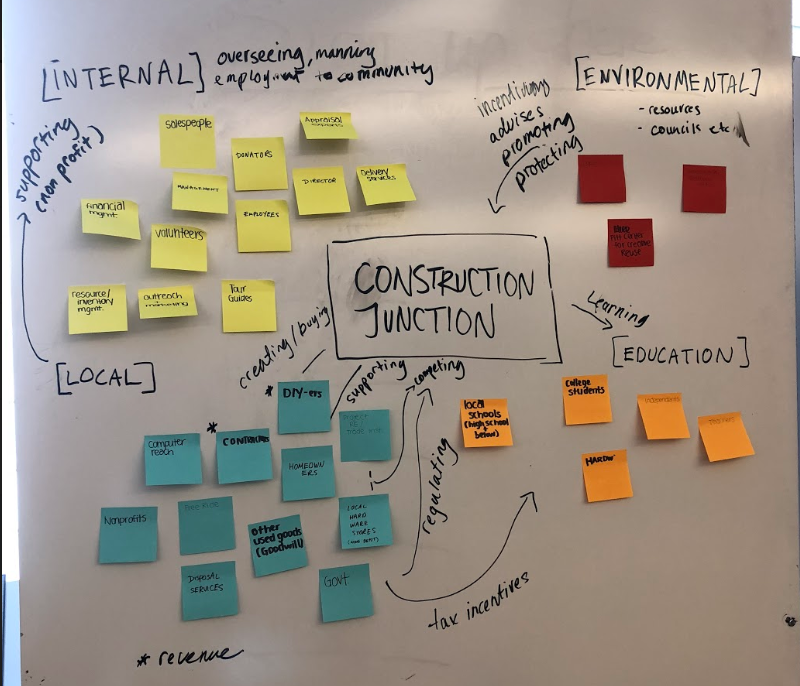
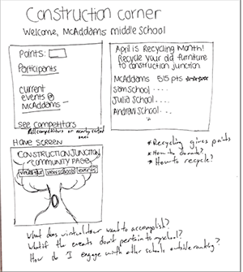

THE JUNCTION JOURNEY
TYPE: MOBILE DESIGN
DURATION: 3 WEEKS
ROLES: BRANDING & CONTENT STRATEGIST, PROTOTYPER
METHODS: ITERATIVE PROTOTYPING, AR MODELING,
RESEARCH, REVERSE ASSUMPTIONS, PITCHING

DURATION: 3 WEEKS
ROLES: BRANDING & CONTENT STRATEGIST, PROTOTYPER
METHODS: ITERATIVE PROTOTYPING, AR MODELING,
RESEARCH, REVERSE ASSUMPTIONS, PITCHING
01 PROBLEM STATEMENT
Our client is Construction Junction, a non-profit warehouse in Pittsburgh, supplying used goods
and construction materials at reduced prices. After doing some introductory research,
my team and I realized that although they sell a lot of useful things,
there is a lack of brand awareness and understanding
the applicability of their products in a daily use context.
Our client is Construction Junction, a non-profit warehouse in Pittsburgh, supplying used goods
and construction materials at reduced prices. After doing some introductory research,
my team and I realized that although they sell a lot of useful things,
there is a lack of brand awareness and understanding
the applicability of their products in a daily use context.
02 STRATEGY: USE WOM
Since Construction Junction has all the social media
platforms they need, we decided to increase efforts
for word of mouth marketing. We targeted children,
since they are the most effective channel for marketing
in a community, especially through school.
Since Construction Junction has all the social media
platforms they need, we decided to increase efforts
for word of mouth marketing. We targeted children,
since they are the most effective channel for marketing
in a community, especially through school.

03IDEATION & LOW-FI PROTOTYPINGThrough our brainstorming, we realized the best way to
reach children was through a game
or something they could share
amongst each other and get excited about,
potentially bringing things back to discussions at home
reach children was through a game
or something they could share
amongst each other and get excited about,
potentially bringing things back to discussions at home
| BRAINSTORM |  |
 |
| LOW-FI PROTOTYPING |  |  |
04 GAMIFICATION USING AUGMENTED REALITY AND MICRO INTERACTIONS
We used augmented reality to teach students about what they can and can't recycle.
They key microinteractions we incorporated were on the milestones pages (see below)
with the celebration and the rising milestones. The reason for this microinteraction was to inspire
a sense of accomplishment and pride in the children using the app, and through several
rounds of user questioning, we learned that the majority of peers really enjoyed
the small animations that showed recognition for their accomplishments.

We used augmented reality to teach students about what they can and can't recycle.
They key microinteractions we incorporated were on the milestones pages (see below)
with the celebration and the rising milestones. The reason for this microinteraction was to inspire
a sense of accomplishment and pride in the children using the app, and through several
rounds of user questioning, we learned that the majority of peers really enjoyed
the small animations that showed recognition for their accomplishments.
05 FINAL DESIGN
Through the Junction Journey, we aim to build the awareness
of our brand and motivate our community to be more environmentally
friendly through targeting a young age group, whom we can leverage
for their excitement and accessibility to peers. For Construction Junction,
this is invaluable as they build more brand awareness and they are able to
collect data through their app on how to better market themselves.
Through the Junction Journey, we aim to build the awareness
of our brand and motivate our community to be more environmentally
friendly through targeting a young age group, whom we can leverage
for their excitement and accessibility to peers. For Construction Junction,
this is invaluable as they build more brand awareness and they are able to
collect data through their app on how to better market themselves.
 |
 |